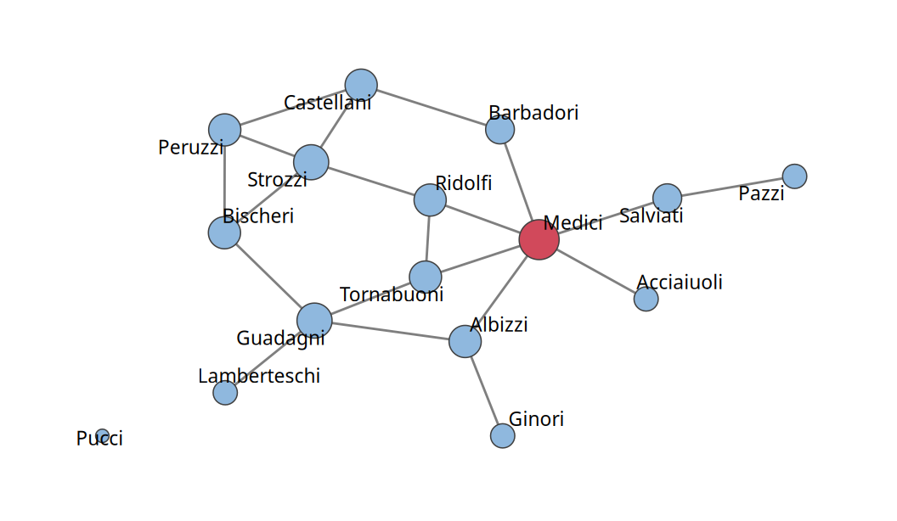
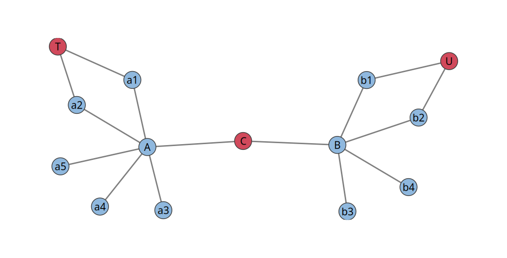
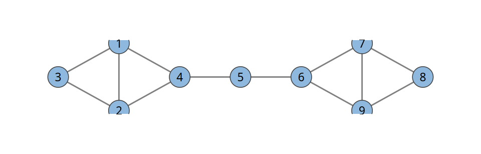
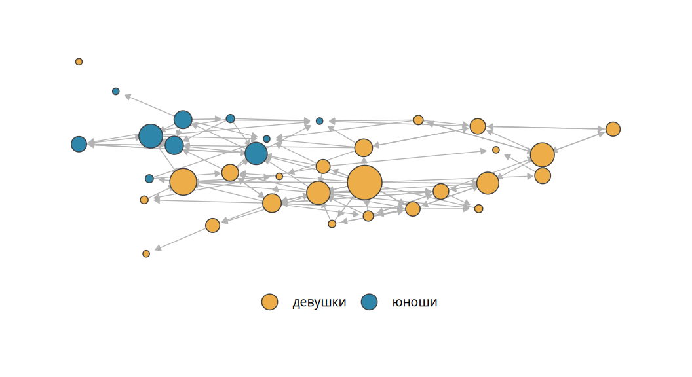

3 Центральность
Описывать сеть можно на нескольких уровнях. Глобальные характеристики относятся ко всей сети: распределение степеней, плотность, среднее расстояние. Паттерны сегрегации показывают, разделена ли сеть на группы похожих узлов. Локальные паттерны описывают небольшие фрагменты сети, например треугольники друзей. Наконец, можно описывать позиции отдельных узлов. Гомофилии и кластеризации посвящена глава 4. Эта глава посвящена позициям узлов. Характеристики позиций исторически называют центральностями.
3.1 Позиция узла в сети
Вернёмся к школьной сети на рис. 2.1. Какую позицию стоит занять, чтобы первым узнавать новости класса? Скорее всего, позицию ученика с большим числом друзей. Изолированная ученица новостей не узнает. А если по классу ходит грипп? Тогда, наоборот, выгоднее всего быть изолированным узлом: заразиться не от кого. На той же идее были построены карантинные меры во время пандемии ковида. Сокращение контактов снижает скорость распространения болезни.
Пример показывает главное. Центральность всегда определяется по отношению к процессу, который идёт по сети. Одна и та же позиция выгодна для одного процесса и невыгодна для другого. Позиция узла может влиять на важные исходы. Экономисты изучали, как в деревнях южной Индии распространяется участие в программе микрокредитования (Banerjee и др. 2013 г.). Сначала они описали социальные связи во всех деревнях. Затем банк рассказывал о программе нескольким местным «лидерам». Программа распространилась шире там, где эти первые получатели информации занимали в сети более центральные позиции.
Мер центральности придумано несколько десятков. Почти все они развивают одну из четырёх идей. Узел централен, если у него много связей (степень). Узел централен, если он близок ко всем остальным (близость). Узел централен, если через него проходят пути между другими узлами (посредничество). Наконец, узел централен, если центральны его соседи (влияние, или престиж).
3.2 Центральность по степени
Самая простая мера центральности уже знакома нам по главе 2. Центральность по степени (degree centrality) равна степени узла: чем больше связей, тем центральнее узел. В направленной сети различают входящую и исходящую центральность по степени.
Соседей узла \(i\) в сети \(g\) обозначают \(N_i(g) = \{j : (i, j) \in E\}\). Фигурные скобки задают множество, двоеточие внутри них читается «таких, что». Вся запись означает: множество таких узлов \(j\), что пара \((i, j)\) принадлежит множеству связей. Степень равна числу соседей: \(d_i = |N_i(g)|\). Часто степень нормализуют, деля на \(N - 1\), наибольшее возможное число соседей. Нормализованная степень лежит между 0 и 1. Смысл нормализации тот же, что у процентов в опросах: она позволяет сравнивать сети разного размера. Десять друзей в классе из пятнадцати человек и в школе из тысячи означают разное.
Классический пример даёт сеть брачных союзов знатных семей Флоренции XV века (рис. 3.1) (Padgett и Ansell 1993 г.). Брак в то время был финансовой и политической сделкой. Поэтому браки хорошо задокументированы. Историков давно интересовало, как Медичи, поначалу не самые богатые и влиятельные, пришли к власти. Сеть подсказывает часть ответа. У Медичи 6 брачных союзов, больше, чем у любой другой семьи.
3.2.1 Почему степени недостаточно
Степень учитывает только количество связей. Все связи для неё равноценны. Между тем связи бывают разного качества. Пусть город разделён рекой на два берега, а через реку перекинуты два-три моста. Если представить город сетью, мост окажется узлом всего с двумя связями. Однако без него сеть распадётся на две несвязанные части. Не случайно пробки скапливаются именно у мостов. Узлы в таких позициях называют посредниками, или брокерами (brokers).
На рис. 3.2 у трёх узлов C, T и U одинаковая степень: у каждого два соседа. Их позиции явно различаются. Узел C соединяет две большие группы. Без него сеть распалась бы. Его соседи A и B сами связаны со многими. Соседи узлов T и U связаны лишь с немногими. Степень этих различий не видит. Следующие меры центральности придуманы именно для них.

3.3 Центральность по близости
Первая идея: центральный узел находится близко ко всем остальным. Возьмём узел \(i\) и посчитаем расстояния \(dist(i, j)\) от него до всех остальных \(N - 1\) узлов (глава 2). Их среднее показывает, насколько узел удалён от остальной сети. Чем оно больше, тем узел периферийнее. Нам нужна величина, которая растёт вместе с центральностью. Поэтому берут обратную величину.
ЗаметкаОпределение
Центральностью по близости (closeness centrality) узла \(i\) называют величину, обратную среднему расстоянию от него до остальных узлов: \[ C^{clo}_i = \frac{N - 1}{\sum_{j \neq i} dist(i, j)}. \]
В знаменателе стоит сумма расстояний от узла \(i\) до остальных узлов. Запись \(j \neq i\) под знаком суммы означает, что складываются расстояния до всех узлов \(j\), кроме самого \(i\) (знак \(\neq\) читается «не равно»). Числитель \(N - 1\) равен числу этих узлов. Перевёрнутая дробь дала бы среднее расстояние. Наша дробь обратна ему. Чем ближе узел к остальным, тем меньше знаменатель и тем больше центральность. Наибольшее значение, единица, достигается у узла, связанного напрямую со всеми.
Посчитаем близость для Асель в сети «Кайрат и Нуртас». Кайрат, Нуртас и Жанна находятся от неё на расстоянии 1, Арман на расстоянии 2. Сумма расстояний равна 5, поэтому \(C^{clo}_{\text{Асель}} = 4/5 = 0{,}8\). Для остальных узлов близость равна: Кайрат 0,57; Нуртас 0,57; Асель 0,80; Жанна 0,67; Арман 0,44. Степень Жанны такая же, как у Кайрата и Нуртаса. Близость у неё выше: Жанна соединяет Армана с остальными и поэтому ближе к каждому. Само по себе значение близости говорит мало. Смысл имеет сравнение узлов друг с другом.
3.3.1 Недостижимые узлы
Близость требует расстояний до всех узлов. А если какой-то узел недостижим? Во флорентийской сети у семьи Пуччи нет ни одного брачного союза. В школьной сети есть изолированная ученица. В направленной сети недостижимость встречается ещё чаще: у 7 учеников нет исходящих связей, поэтому по исходящим связям из них никуда не попасть.
Возможных решений два. Первое: исключить недостижимые узлы из расчёта. Так по умолчанию поступает igraph: близость считается только по достижимым узлам, а для узлов без единого достижимого соседа не определена (NaN). Второе: считать расстояние до недостижимого узла бесконечным. Тогда его вклад в близость равен нулю. Эту идею точно выражает гармоническая центральность, которая усредняет не расстояния, а обратные к ним величины:
\[ H_i = \frac{1}{N - 1} \sum_{j \neq i} \frac{1}{dist(i, j)}, \qquad \frac{1}{\infty} = 0. \]
Под знаком суммы теперь стоит не расстояние, а обратная ему величина. Сосед на расстоянии 1 даёт вклад 1, узел на расстоянии 2 даёт вклад \(1/2\), узел на расстоянии 3 даёт \(1/3\). Недостижимый узел находится на бесконечном расстоянии (знак \(\infty\)). Его вклад равен нулю, что и записано справа. Множитель \(\frac{1}{N - 1}\) превращает сумму в среднее по всем остальным узлам.
Гармоническая центральность определена для любой сети. У изолированного узла она равна нулю.
3.4 Центральность по посредничеству
Вторая идея: центральный узел лежит на путях между другими узлами. Через такого посредника проходит информация. Он может её задержать или исказить.
ЗаметкаОпределение
Пусть \(P(i, j)\) означает число кратчайших путей между узлами \(i\) и \(j\), а \(P_k(i, j)\) означает число тех из них, что проходят через узел \(k\). Центральностью по посредничеству (betweenness centrality) узла \(k\) называют \[ C^{btw}_k = \sum_{i \neq j,\; i, j \neq k} \frac{P_k(i, j)}{P(i, j)}. \]
Сумма берётся по всем парам узлов \(i\) и \(j\), отличных друг от друга и от самого узла \(k\): так читается запись под знаком суммы. Для каждой такой пары считается дробь. В знаменателе стоит число всех кратчайших путей между \(i\) и \(j\), в числителе число тех из них, что проходят через \(k\). Нижний индекс \(k\) у буквы \(P\) в числителе напоминает об этом условии.
Каждое слагаемое показывает, какую долю кратчайших путей между \(i\) и \(j\) контролирует \(k\). Если путь единственный и проходит через \(k\), слагаемое равно единице. Если из двух кратчайших путей через \(k\) проходит один, слагаемое равно половине. Для нормализации сумму делят на число пар узлов, не включающих \(k\): \((N-1)(N-2)/2\) в ненаправленной сети и \((N-1)(N-2)\) в направленной (Freeman 1977 г.). В направленной сети кратчайшие пути идут только по стрелкам.
В табл. 3.1 сравниваются три меры центральности для сети из девяти узлов на рис. 3.3. Две группы по четыре узла соединены через узел 5. Его степень минимальна. Близость и посредничество у него наибольшие: все пути между группами идут через него. Узлы 3 и 8 никогда не оказываются посредниками.

| Узел | Степень | Близость | Посредничество |
|---|---|---|---|
| 1 | 0,375 | 0,381 | 0,107 |
| 2 | 0,375 | 0,381 | 0,107 |
| 3 | 0,250 | 0,296 | 0,000 |
| 4 | 0,375 | 0,471 | 0,536 |
| 5 | 0,250 | 0,500 | 0,571 |
| 6 | 0,375 | 0,471 | 0,536 |
| 7 | 0,375 | 0,381 | 0,107 |
| 8 | 0,250 | 0,296 | 0,000 |
| 9 | 0,375 | 0,381 | 0,107 |
Во флорентийской сети посредничество Медичи равно 0,45. У следующей по этому показателю семьи оно вдвое меньше. Медичи связывали между собой семьи, которые иначе не были бы связаны. В этом историки видят один из источников их силы.
Посредничество особенно полезно там, где степень вводит в заблуждение. В одном исследовании трудовой мобильности в Казахстане сеть строилась по переходам работников между регионами. Наибольшая степень оказалась у центральных районов Астаны и Алматы: туда приезжают работать отовсюду. Наибольшее посредничество получили региональные центры вроде Семея и Усть-Каменогорска. Многие сначала находят работу в ближайшем региональном центре, а уже потом в столице. Столицы служат конечными точками маршрутов. Региональные центры служат пересадочными станциями.
3.5 Центральность по собственному вектору
Третья идея: важно не только число друзей, но и то, насколько важны сами друзья. На рис. 3.2 узел C связан с двумя хабами, у которых шесть и пять соседей. Узел T связан с двумя узлами, у которых по два соседа. Через своих соседей C может дотянуться до гораздо большей части сети.
Формализуем идею: центральность узла пропорциональна сумме центральностей его соседей,
\[ c_i = k \sum_{j=1}^{N} a_{ij} c_j, \tag{3.1}\]
где \(a_{ij}\) означает элемент матрицы смежности, а \(k\) означает некоторую постоянную.
Сумма здесь берётся по всем узлам \(j\). Однако элемент \(a_{ij}\) равен единице только для соседей узла \(i\), для остальных узлов он равен нулю. Поэтому в сумме остаются лишь центральности соседей. Например, у Асель три соседа. Для неё формула даёт \(c_{\text{Асель}} = k\,(c_{\text{Кайрат}} + c_{\text{Нуртас}} + c_{\text{Жанна}})\).
Определение выглядит круговым: центральность узла выражается через центральности соседей. Однако такие уравнения, записанные для всех узлов, образуют систему из \(N\) линейных уравнений. В матричной форме она выглядит так:
\[ \mathbf c = k A \mathbf c. \]
Жирная буква \(\mathbf c\) обозначает вектор: столбец из центральностей всех \(N\) узлов. Буква \(A\) обозначает матрицу смежности. Произведение \(A \mathbf c\) даёт новый столбец. В его строке \(i\) стоит сумма \(\sum_j a_{ij} c_j\), то есть сумма центральностей соседей узла \(i\). Равенство утверждает: если этот столбец умножить на число \(k\), получится исходный столбец центральностей.
Вектор, который после умножения на матрицу переходит в себя с точностью до множителя, называется собственным вектором (eigenvector) матрицы. Отсюда название меры: центральность по собственному вектору (Bonacich 1987 г.). У матрицы \(N \times N\) может быть до \(N\) собственных векторов. В качестве центральности берут вектор, соответствующий наибольшему собственному числу. Все его элементы неотрицательны. Обычно его нормируют так, чтобы наибольший элемент был равен единице.
В сети на рис. 3.2 центральность узла C равна 0,60, узла T равна 0,37, узла U равна 0,23. Степени у всех трёх одинаковые. Во флорентийской сети Медичи снова на первом месте.
У центральности по собственному вектору есть наглядный смысл. Маршрутом называют последовательность связей, в которой узлы могут повторяться. Элемент матрицы \(A^2\) в строке \(i\) и столбце \(j\) равен числу маршрутов длины 2 из \(i\) в \(j\). Элемент \(A^3\) считает маршруты длины 3 и т. д. Посчитаем для каждого узла число маршрутов длины \(m\), которые из него начинаются. С ростом \(m\) эти числа становятся пропорциональны центральности по собственному вектору. Центральный узел служит началом множества длинных маршрутов по сети.
Для направленных сетей эта мера ведёт себя плохо: узлы без входящих связей получают нулевую центральность и обнуляют тех, на кого указывают. Поэтому её считают по ненаправленной версии сети либо используют вариант для направленных сетей. Самый известный такой вариант, PageRank, лежал в основе поисковой системы Google (Brin и Page 1998 г.). Важность страницы складывается из важности ссылающихся на неё страниц. PageRank равен доле времени, которую «случайный серфер» проводит на странице, если он щёлкает по случайным ссылкам и время от времени переходит на случайную страницу.
Вернёмся к деревням Индии. Участие в программе предсказывала именно центральность первых получателей информации по собственному вектору (и родственная ей мера). Число их связей предсказывало его хуже (Banerjee и др. 2013 г.).
3.6 Сравнение центральностей
Разные меры описывают разные стороны позиции узла. Насколько они согласуются, зависит от устройства сети. В табл. 3.2 приведены корреляции между мерами центральности для школьной сети. Входящая степень сильно связана с PageRank и посредничеством. Исходящая близость почти не связана ни с чем: то, насколько близким ученик сам считает класс, мало говорит о его популярности.
| Вх. ст. | Вх. бл. | Исх. бл. | Поср. | Соб. в. | |
|---|---|---|---|---|---|
| Входящая близость | 0,77 | ||||
| Исходящая близость | 0,19 | 0,04 | |||
| Посредничество | 0,69 | 0,69 | 0,17 | ||
| Собственный вектор | 0,75 | 0,60 | 0,30 | 0,51 | |
| PageRank | 0,91 | 0,77 | 0,09 | 0,85 | 0,59 |
Наибольшее посредничество в классе у ученицы с номером 155 (рис. 3.4). Она дружит с людьми из разных компаний и связывает их между собой. Если такой человек уходит, компания распадается на островки.

Центральности можно сравнивать между группами узлов так же, как любые другие переменные. Средняя исходящая близость у девушек равна 0,41, у юношей 0,26. С точки зрения девушек класс теснее: их друзья сами называют много друзей. Входящая близость у тех и других почти одинакова (0,33 и 0,36). Одноклассники воспринимают юношей не более далёкими, чем девушек. Центральность по собственному вектору у юношей заметно ниже (0,36 против 0,38). Юноши замкнуты в небольшой группе. Среди девушек много связанных с разными компаниями.
Такие сравнения описательны. Они порождают гипотезы, но не проверяют их: класс мал, а наблюдения в сети зависимы. Как проверять гипотезы о сетях, рассказано в главе 6.
3.7 В R
Все меры центральности из этой главы есть в igraph. Аргумент normalized = TRUE включает нормализацию, аргумент mode выбирает направление связей:
degree(school, mode = "in", normalized = TRUE)
closeness(school, mode = "out", normalized = TRUE) # NaN без достижимых узлов
harmonic_centrality(school, mode = "out", normalized = TRUE)
betweenness(school, normalized = TRUE) # учитывает направление
eigen_centrality(as_undirected(school))$vector # результат в $vector
page_rank(school)$vectorФункция distances() по умолчанию игнорирует направление связей. Чтобы учесть его, нужен аргумент mode = "out" или mode = "in". Недостижимым парам соответствует значение Inf.
Центральности удобно собрать в таблицу, присоединить к атрибутам узлов и дальше работать с ними обычными средствами:
cent <- igraph::as_data_frame(school, what = "vertices") %>%
mutate(btw = betweenness(school, normalized = TRUE),
cout = closeness(school, mode = "out", normalized = TRUE))
cent %>% group_by(sex) %>% summarise(across(c(btw, cout), ~ mean(.x, na.rm = TRUE)))
cor(cent$btw, cent$cout, use = "complete.obs")3.8 Вопросы и упражнения
- Посчитайте вручную близость и посредничество всех узлов сети «Кайрат и Нуртас». Какой узел центральнее всех по каждой мере?
- Придумайте сеть, в которой узел с наибольшей степенью имеет нулевое посредничество.
- Почему нормализующий множитель посредничества в ненаправленной сети равен \((N-1)(N-2)/2\)?
- Каким учеником лучше быть, чтобы быстро распространить по классу новость? А чтобы узнать её первым? Какие меры центральности отвечают на эти вопросы?
- Возведите в квадрат матрицу смежности сети «Кайрат и Нуртас». Что означают числа на диагонали полученной матрицы?